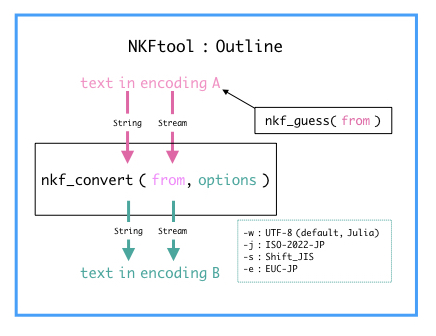

Guide
Installation
nkf
NKFtool requires nkf to be installed in your system. Major Unix-like operating systems offer its precompiled version in their package management systems.
For MacOSX, nkf can be installed with Homebrew:
brew install nkfNKFtool
NKFtool also requires Julia v1.0 or above.
To install NKFtool using Julia's packaging system, enter Julia's package manager prompt with ], and run
(v1.1) pkg> add NKFtoolOverview

Convert a string
The nkf command can guess the encoding of Japanese texts.
To guess the encoding of a string from, use nkf_guess(from::String)
julia> nkf_guess(raw"こんにちわ")
"UTF-8"
julia> nkf_convert( raw"こんにちわ", "-j") |> nkf_guess
"ISO-2022-JP"
julia> nkf_convert( raw"こんにちわ", "-e") |> nkf_guess
"EUC-JP"
julia> nkf_convert( raw"こんにちわ", "-s") |> nkf_guess
"Shift_JIS"To convert the encoding of a string from, use nkf_convert(from::String, options="-w -m0").
The second parameter options is passed to the nkf command to specify its action.
The default of options is -w -m0 (output encoding is UTF-8, no MIME decode), which keeps the encoding of Julia's standard strings, i.e., UTF-8.
julia> nkf_convert(raw"こんにちわ")
"こんにちわ"
julia> nkf_convert(raw"こんにちわ", "-w -m0")
"こんにちわ"To convert the encoding, the output encoding option, only one of -j (ISO-2022-JP), -s (Shift_JIS), -e (EUC-JP) and -w (UTF-8), should be specified. The input encoding option, only one of -J, -S, -E and -W, may be specified if you know the encoding of the input string from.
Because in Julia strings in the encoding other than UTF-8 are not printable , it is a good practice to encode them to printable characters with e.g. Base64.base64encode(), as follows:
julia> using Base64
julia> nkf_convert( raw"こんにちわ", "-j") |> base64encode
"GyRCJDMkcyRLJEEkbxsoQg=="
julia> String(base64decode(ans)) |> nkf_convert
"こんにちわ"Convert a text stream
nkf_guess function accepts input text stream for the first argument.
nkf_convert function also accepts input text stream for the first argument, which returns the output text stream.
See the following code using nkf_guess(from::IO) to guess the encoding of a text file.
julia> open("hello_sjis.txt","w") do f
print(f, nkf_convert(raw"こんにちわ", "-s"))
end
#
encoding=open("hello_sjis.txt") do f
nkf_guess(f) # <==
end
"Shift_JIS"The following code using nkf_convert(from::IO, options="-w -m0") is to convert a text file from Shift_JIS encoding to UTF-8 encoding and to read it as Julia's string.
julia> hello_utf=open("hello_sjis.txt") do f
nkf_convert(f, "-w -m0") # <==
end
"こんにちわ"